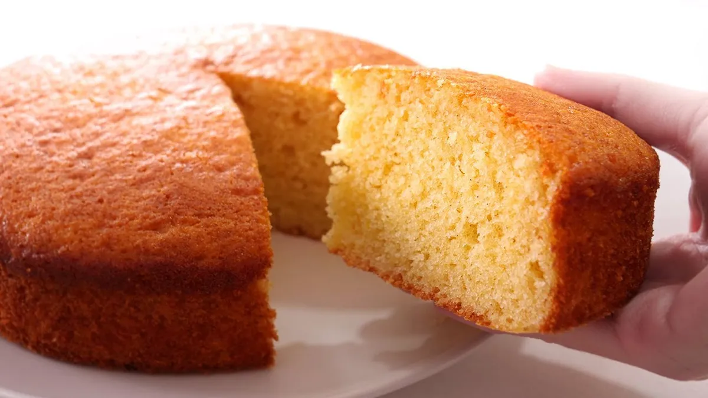

Bizcochuelo esponjoso

Bizcochuelo casero
Ingredientes
- 3 huevos
- 1 taza de azúcar
- 1 taza de harina leudante
- 1/2 taza de leche
- 1 cucharadita de esencia de vainilla
Preparación
- Batir los huevos con el azúcar hasta que la mezcla esté espumosa.
- Agregar la leche y la esencia de vainilla.
- Incorporar la harina tamizada poco a poco, mezclando suavemente.
- Verter la mezcla en un molde enmantecado y enharinado.
- Hornear a 180°C durante 30-35 minutos.
- Dejar enfriar antes de desmoldar y servir.
Tabla 1: Ingredientes
| Harina |
200g |
| Azúcar |
200g |
| Leche |
100ml |
| Huevos |
3 unidades |
Tabla 2: Datos de estudiantes
| Nombre |
Edad |
Materia |
| Florencia |
22 |
HTML |
| Antonella |
22 |
HTML |
Tabla 3: Eventos_Hacer bizcochuelo
| Campus party |
| Fecha |
Julio 2025 |
Tabla 4: Diario
| Evento |
Lugar |
Web |
| Apertura del teatro |
Cordoba |
Cultura
|
| Inauguración de la ciclovía |
Ciclovía
|